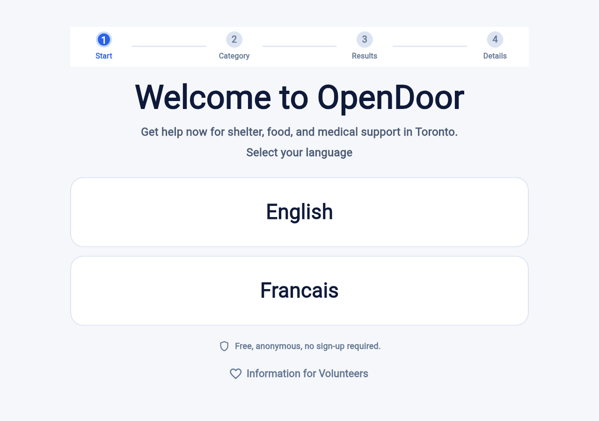
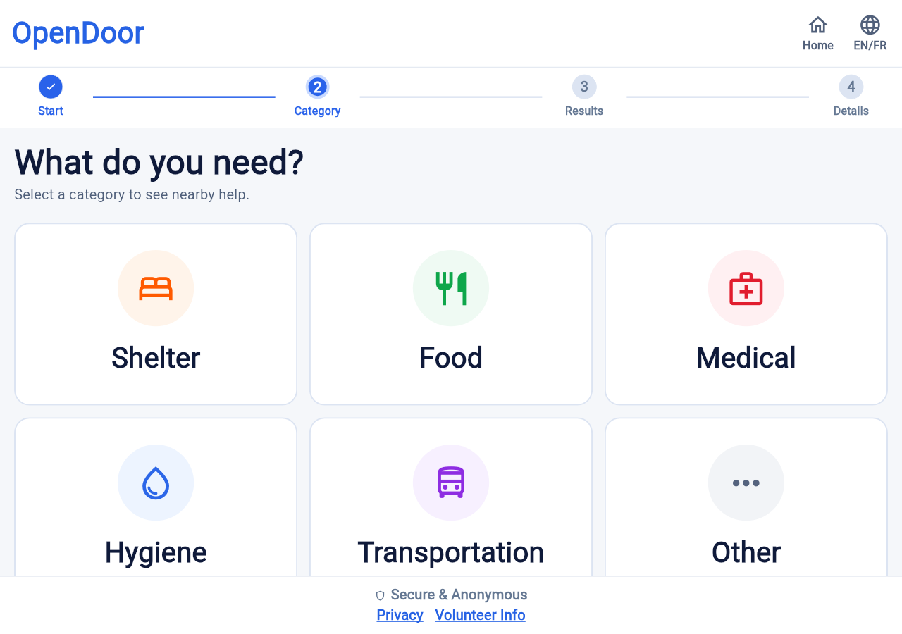

Touchscreen kiosk · Toronto · English & Français
Find help nearby.
No account. No phone. No ID.
OpenDoor is a touchscreen app for finding shelter, food, medical care and other services close by — built for people who can't, or shouldn't have to, sign up for anything first.
- No sign-in
- Never asks where you are
- Clears itself after 3 minutes
- English & Français

How it works
Four steps. Big buttons. No typing, no keyboard, nothing to remember.
-
1
Start
Walk up and pick a language. That's the whole sign-in.
-
2
Category
Choose what you need — a bed, a meal, a clinic, a shower.
-
3
Results
See what's nearby on a map, sorted by distance, with walking time and whether it's open right now.
-
4
Details
Get the address, hours, and directions for the place you picked.

Hours and availability change often — call ahead when you can. In an emergency, call 911.
What you can find
Ten categories of nearby help.
-
Shelter
Emergency beds and shelters
-
Food
Food banks, meal programs, delivery
-
Medical
Free clinics and community health
-
Hygiene
Washrooms, showers, laundry
-
Transportation
Nearby transit stations
-
Legal aid
Free legal help and advice
-
Employment
Job centres and work programs
-
Mental health
Counselling and crisis support
-
Drop-in centres
Somewhere warm to sit
-
Clothing
Free and low-cost clothing
Listings come from Google Places, a bundled dataset, and 211 Ontario open data.